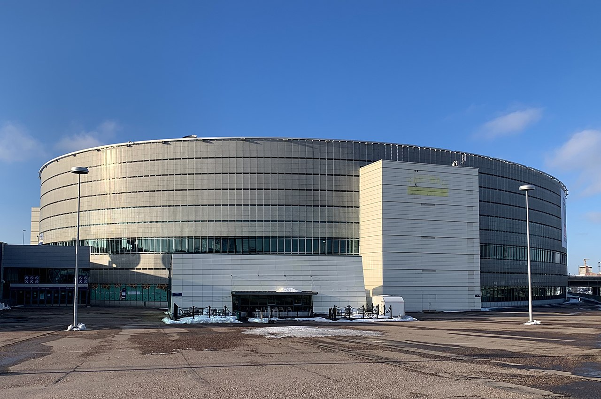

Helsinki-halli
Helsinki-halli(ruots. Helsingforsarenan, vuosina 2014–2022 Hartwall Arena) on Hjallis Harkimon ideoima monitoimihalli, joka valmistui 1997.
Se sijaitsee Helsingin Keski-Pasilassa.Areena oli nimetty juomavalmistaja Hartwallin mukaan, joka toimi hallin nimisponsorina vuoteen 2022 saakka.
Halliyhtiön pääosakas on vuodesta 2013 ollut Gennadi Timtšenkon ja Rotenbergien yritys Arena Events Oy.
Hallista on käytetty aikaisemmin myös nimeä Hartwall-areena (1997–2014); joskus myös Helsinki-areena ja Helsingin areena.